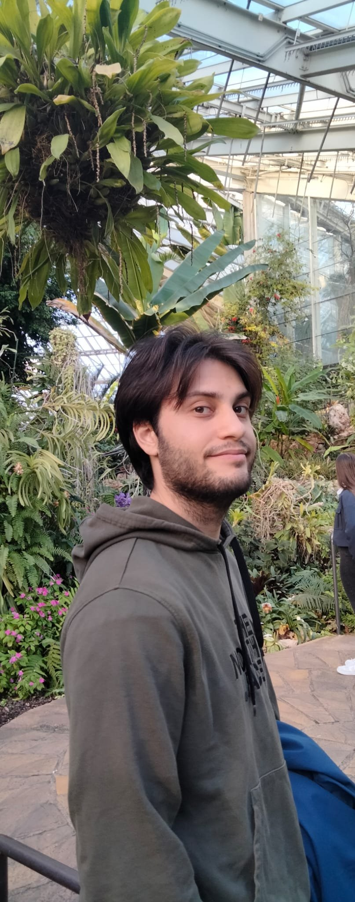

I'm a PhD student in Computer Science at the Université Côte d'Azur.
My PhD topic is about "Failure Handling in Multiparty Session Types".
I'm passionate about programming languages and the theory behind distributed computing. This site is self-hosted and created with Gleam.
Papers
A Petri Net Semantics for Acyclic Safe BPMN Choreographies
Choreographies for Program Understanding
Thesis
Realisability of Global Types: Decidability and Verification
ChorEr: un analizzatoreo per generare Automi Coreografici da codice sorgente Erlang
Schools
- 2026ICTAC Postgraduate School on Formal Methods for Building Mission-Critical SystemsBariloche, Argentina
- 2026Dutch Winter School on Logic and VerificationUniversity of Twente, The Netherlands
- 2025Scottish Programming Languages and Verification Summer School (SPLV)Edinburgh, Scotland
- 2024Lipari Summer School on Abstract InterpretationLipari, Italy